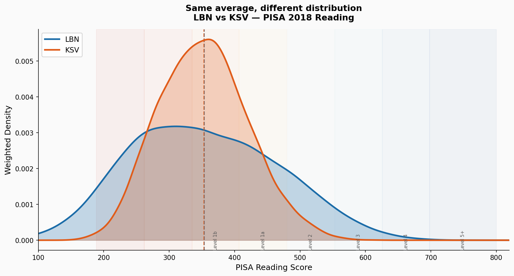
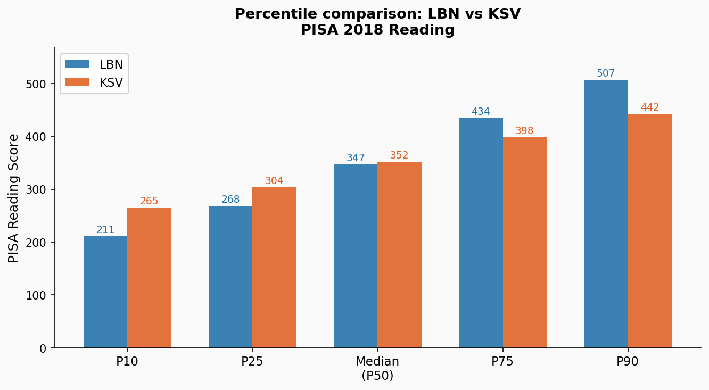
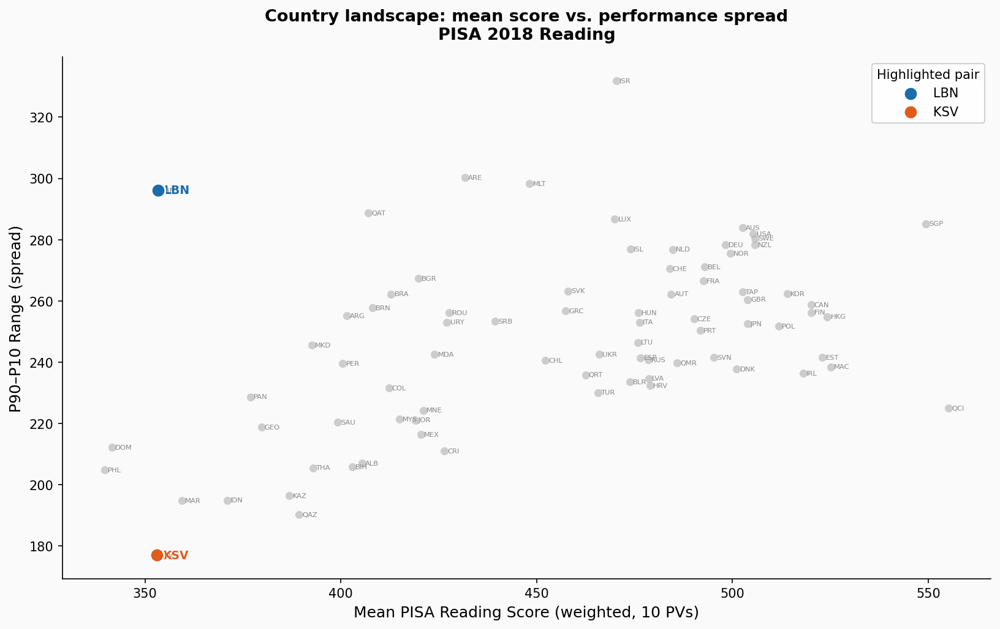

PISA 2018 · Reading
Lebanon and Kosovo scored within a single point of each other on the 2018 PISA reading assessment. But their students live in completely different educational worlds.
When countries are ranked by their average PISA score, the table suggests a clean hierarchy: top performers, middle performers, low performers. But averages are summaries — and summaries hide things.
Consider Lebanon and Kosovo. In the 2018 PISA reading assessment, Lebanon averaged 353.4 points and Kosovo averaged 353.1 points. A difference of 0.3 points — effectively zero. By the most widely-cited measure of educational performance, these two countries are identical.
They are not identical.

Figure 1. Weighted distribution of PISA 2018 Reading scores for Lebanon (blue) and Kosovo (orange). The dashed vertical lines mark each country's weighted mean — nearly indistinguishable. The shapes of the distributions are not.
Lebanon's distribution is wide and flat. Students are spread across a large range of outcomes — from very low scores around 200 to relatively high scores approaching 550. The system is stratified: some students clearly have access to better schooling than others, and it shows in the results. Lebanon's standard deviation — a measure of how spread out students are — is 113 points, one of the highest of any PISA 2018 participant.
Kosovo's distribution is narrow and peaked. Students are clustered tightly around the middle, with far fewer at either extreme. The system is more uniform: students experience similar educational conditions, for better or worse. Kosovo's standard deviation is just 68 points.
Lebanon — Standard Deviation
113
points — wide, stratified distribution
Kosovo — Standard Deviation
68
points — narrow, uniform distribution
The most striking detail is not just that Lebanon is more spread out — it's where the two distributions diverge.

Figure 2. Key percentiles for Lebanon and Kosovo. At the 10th percentile, Kosovo's students outperform Lebanon's by 54 points. At the 90th percentile, Lebanon's students outperform Kosovo's by 65 points.
At the bottom of the distribution, Kosovo's students actually outperform Lebanon's. The lowest-scoring 10% of Kosovan students reach around 265 points, while the lowest-scoring 10% of Lebanese students reach only 211 — a 54-point gap in Kosovo's favour.
But at the top, the picture reverses. The highest-scoring 10% of Lebanese students reach around 507 points, a solid Level 2 performance. The highest-scoring 10% of Kosovan students reach only 442 — still well below the international PISA average of 487, despite being Kosovo's top performers.
| Statistic | Lebanon | Kosovo |
|---|---|---|
| Mean (weighted, 10 PVs) | 353.4 | 353.1 |
| Standard deviation | 113 | 68 |
| P10 (bottom 10%) | 211 | 265 |
| P25 | 268 | 304 |
| Median (P50) | 347 | 352 |
| P75 | 434 | 398 |
| P90 (top 10%) | 507 | 442 |
| P90–P10 range | 296 | 177 |
| % below Level 1b (< 407) | 67.6% | 78.6% |
| % at Level 5+ (≥ 626) | 0.7% | 0.0% |
This pair did not require cherry-picking. Across all 79 PISA 2018 countries, there is no strong relationship between a country's average score and how spread out its students are. Countries with the same mean can have very different levels of internal inequality.

Figure 3. Each dot is a country. The x-axis is the country's weighted mean PISA Reading score; the y-axis is the P90–P10 range (a measure of internal spread). Lebanon and Kosovo sit at almost the same horizontal position but are separated vertically by 119 points — the largest such gap among all qualifying country pairs.
Lebanon and Kosovo are at the extreme end of this phenomenon — the pair with the largest spread difference among all countries within half a standard error of each other in mean. But 75 country pairs meet the same basic criterion: means within 5 points, spread difference above 20 points.
League tables built on national averages carry an implicit message: higher is better, lower is worse, and two countries with the same score are in the same position. This story shows that assumption can be badly wrong.
Lebanon and Kosovo face similar average outcomes, but very different equity challenges. In Lebanon, a significant proportion of students is far below minimum proficiency levels — but there is also a tail of higher performers that pulls the mean up. Interventions that reduce inequality (improving the bottom) could transform the distribution without moving the average much. In Kosovo, the distribution is compressed. There is less distance between the best and worst students — but almost no one reaches internationally competitive levels.
Both countries score well below the OECD average of 487. But the path each would need to take to improve is different. And a single number would never tell you that.